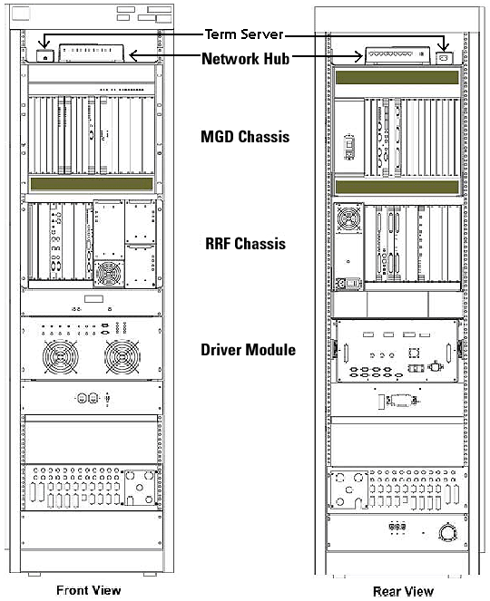

Operating Documentation
Direction 5133315-3, Rev# 14
Signa EXCITE HD 1.5T Service Methods
Module Version 1.0, Version Date 5/3/07
Operating Documentation |
This document covers all of the field replaceable units (FRU’s) contained in the Systems Cabinet. Subsequent sections discuss system shutdown, access, disassembly, and assembly procedures required to replace all of the System Cabinet FRU’s. Illustration 1 shows the general location of the main FRU components within the System Cabinet. Each main component may be a FRU itself, or it may have a list of FRU’s within it.
Illustration 1: SYSTEMS CABINET

The user should be familiar with Cabinet Power up and Power down procedures before beginning any work on the System Cabinet. FRU level replacements covered are:
MGD Chassis, which include
Circuit Board Replacements
Power Supply Module Replacements
MGD Chassis Remove and Replacements
RRF Chassis, which includes:
RRF Chassis Circuit Boards Replacements
RRF Power Supply Replacements
RRF Cooling Fans